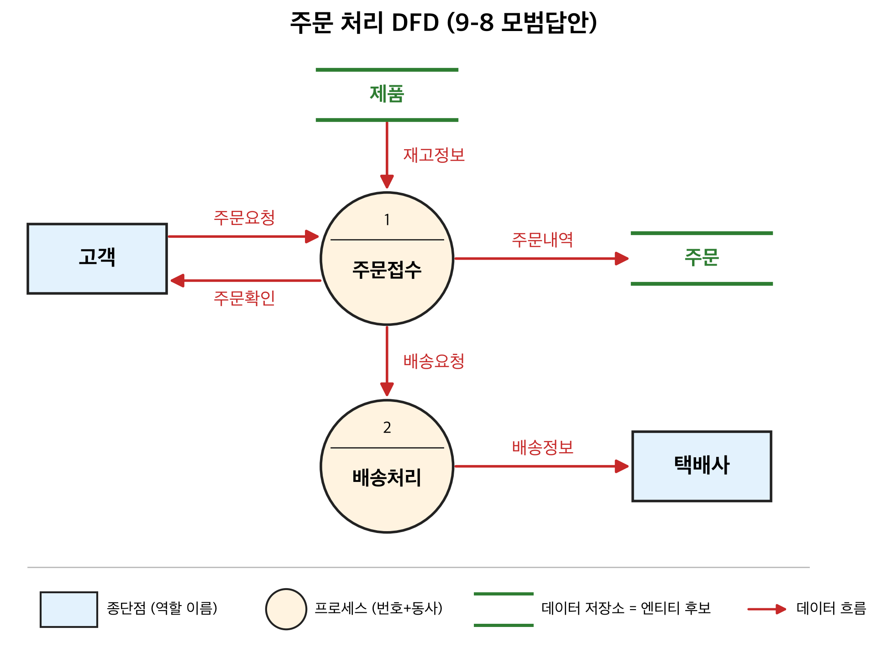
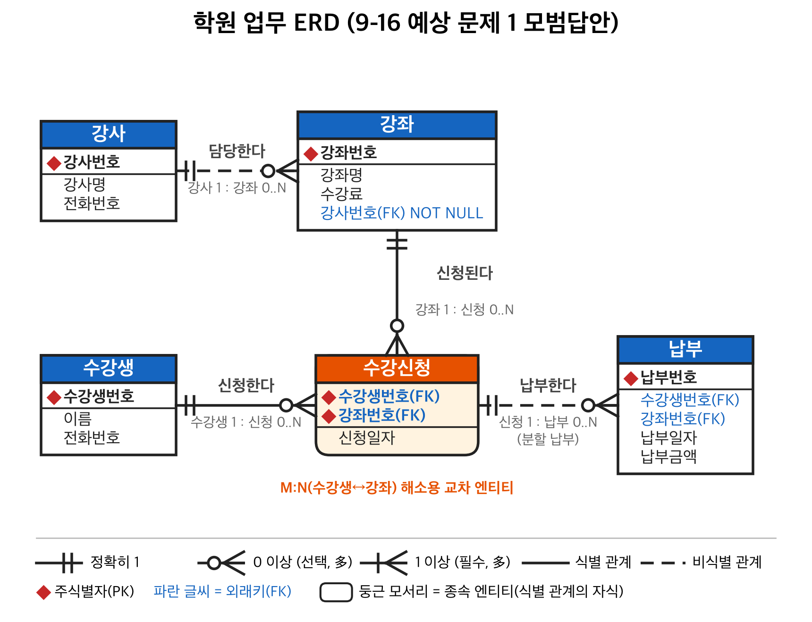
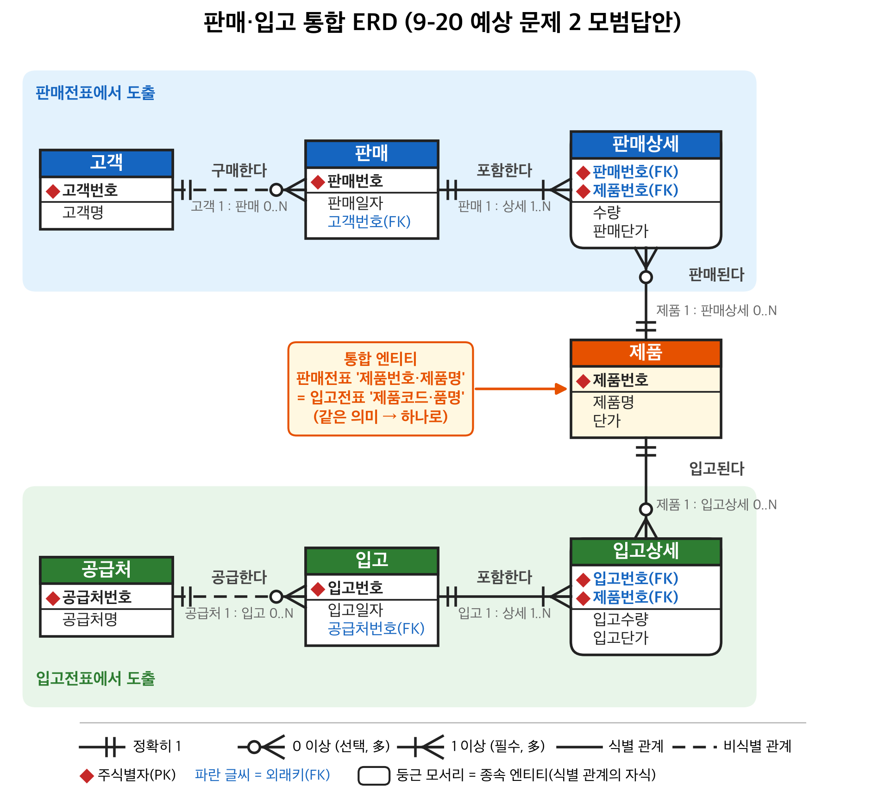

10/22(목) 12:00~13:00 · 정보과학관 301호 · 주관식 20문항(4~10점) · ERD 직접 그리기 비중 큼 🖍 형광펜 = 시험 공지 출제 포인트 (최우선 암기) 근거: 강의 슬라이드 1~7장.
[슬라이드 외]표시는 슬라이드에 직접 없는 내용이라 서술형 답안용으로 보충한 것.
업무분석(5) → [논리적 DB설계 = 데이터 모델링]
엔티티 정의(6) → 식별자/관계 정의(7: 주식별자→관계→외래식별자→업무규칙)
→ 상세화(7: 세부속성) → 정규화(8) → 도메인/용어사전(9) → 통합·검증(10)
→ 물리적 DB설계(11) → DB 구축(12)| 구분 | 논리적 DB 설계 | 물리적 DB 설계 |
|---|---|---|
| 정의 | 현실세계 관찰·분석 → 개념적 모델(ERD) 작성 = 데이터 모델링 | 논리 설계 기반으로 테이블·뷰·인덱스 설계, 반정규화 수행 |
| DBMS | DBMS 종류와 무관 | 특정 DBMS를 염두 |
| 용어 | 엔티티, 속성, 주식별자, 외래식별자, 보조식별자 | 테이블, 컬럼, 기본키, 외래키, 대체키 |
O/X 연습
|, 다중 <|, 선택 O| 종류 | 의미 | 선 |
|---|---|---|
| Identifying (식별 관계) | FK가 자식 PK의 일부 | 실선 |
| Non-Identifying (비식별 관계) | FK가 PK와 별도(일반 속성) | 점선 |
| M:N | FK 추가 안 됨, 정보만 표시 | — |
> many, | one,
O zero. "zero, one, or more" / "one or more"(P) / "zero or
one"(Z)| 유형 | 설명 | 예 |
|---|---|---|
| 열린 질문 | 자유롭게 답하게 함. 의도와 다른 방향으로 흐를 위험 | "가장 큰 애로사항은?" |
| 닫힌 질문 | 정해진 보기 중 선택 | "재고관리가 안 되는 이유는 위치추적/공간부족/수작업 중 무엇?" |
| 추가 질문 | 답변에 대한 보충 질문. 이해하고 있음을 전달 | "예를 하나 들어주시겠습니까?" |
| 기호 | 이름 | 설명 |
|---|---|---|
═══ 위아래 두 줄 |
데이터 저장소(data store) | 머물러 있는 자료 집합 → 엔티티 후보 |
| ○ 원/타원 | 프로세스(process) | 입력 흐름 → 출력 흐름으로 변환 |
| → 화살표 | 데이터 흐름(data flow) | 이동 통로·방향. 화살표 위에 데이터 이름 |
| □ 사각형 | 종단점(terminator) | 발생지(source)/도착지(sink). 개인보다 역할로 명명 |
예) 도서 대여 예약 DFD
═도서정보═ [고객] ═대여정보═
\ 재고정보 | 예약요청 / 반납예정정보
└──────→ ( 1.가능일자 확인 ) ←┘
| 예약가능정보
↓
( 2.예약생성 )
| 예약사항
↓
═예약정보═판매전표 한 장 = 헤더(판매번호·일자·부서·사원·고객) 1건 + 상세(제품·수량·단가) 여러 건.
주식별자: 인스턴스를 구분하는 기준 속성. 현재뿐 아니라 미래에도 중복 없어야 함. 확인 방법 = 테이블을 그려본다
복합 주식별자: 일일판매실적(판매일자+제품번호)
마땅한 주식별자 없음: 수입제품(제품번호+제조업체+원산지)
또는 인위적 주식별자 일련번호
인위적 주식별자의 문제점: 같은 전표를 실수로 두 번 입력해도 대출번호만 다르면 들어감 → 내용상 중복 발생 (대출일+회원번호+도서관리번호로 잡았다면 막힘)
★ 최소성: 주식별자는 최소한의 속성으로 구성. 판매일자 하나만 PK면 같은 날 다른 제품을 넣을 수 없음(유일성 부족), 반대로 불필요한 속성이 포함되면 중복을 못 막음/낭비
관계 정의 방법: ① 문서에서 동사 찾기(고객에게 주문서를 발송) ② 관계 매트릭스 ③ 부모·자식 찾기(A를 만들려면 B 정보가 필요 → B가 부모) ④ 카디널리티·참여도 표시
외래식별자 정의: 부모/자식 구분 → 부모 PK가 자식에 있는지 확인, 없으면 추가
Rule 1~4: ① 관계 있음 = 공유 속성 있음 ② 먼저 생성되는 쪽이 부모 ③ 부모의 공통속성은 PK, 자식의 공통속성은 FK ④ 부모:자식 = 1:N (1쪽이 부모)
업무규칙 = 관계 있는 두 테이블에서 한쪽 데이터 변화로 생길 불일치를 막기 위한 조치를 정의한 것
예시 데이터: 부서(101 영업부, 125 관리부, 146 생산1부, 150 생산2부), 사원(김철수 101, 홍길동 101, 강만길 125, 이재천 146)
| 규칙 | 삭제(delete) | 수정(update) |
|---|---|---|
| Restrict | 자식이 참조 중이면 삭제 불가 (101,125,146 불가 / 150 가능) | 참조 중이면 수정 불가 |
| Cascade | 자식도 함께 삭제 (101 삭제 → 김철수·홍길동 삭제) | 자식 FK도 함께 수정 (101→111이면 사원 부서도 111) |
| Set Null | 자식 FK를 null로 (김철수·홍길동 부서 = null) | 자식 FK를 null로 |
| Set Default | 자식 FK를 미리 정한 기본값으로 | 동일 |
| None | 아무 조치 없음 (무결성 깨질 수 있음) | 동일 |
| 규칙 | 의미 |
|---|---|
| Restrict | 부모에 없는 값(777)이면 삽입/수정 거부 + 에러 |
| None | 어떤 값이든 허용 |
자식 튜플 삭제는 부모에 아무 영향 없음
| Restrict | Cascade | Set Null | |
|---|---|---|---|
| 무결성 보장 방식 | 위반 연산 자체를 거부 | 변경을 자식에 전파 | 참조를 끊음 |
| 장점 | 가장 안전, 실수로 인한 데이터 손실 방지 | 일관성 자동 유지, 편리 | 자식 데이터는 보존 |
| 단점 | 부모 삭제 전 자식을 먼저 정리해야 해서 번거로움 | 의도치 않은 대량 삭제 위험 | FK가 NOT NULL이면 사용 불가, 소속 불명 데이터 생김 |
| 적합한 업무 예 | 대출 기록이 있는 회원은 탈퇴 불가 | 주문 삭제 시 주문상세도 삭제 (헤더-상세) | 부서 폐지 시 사원은 남기고 부서만 미정 |
업무규칙 결정 예 (도서관, 슬라이드의 ERwin RI Actions)
[슬라이드 외 보충]저장 여부 판단 기준 [슬라이드 외 보충]
| 저장하는 게 유리 | 저장하지 않는 게 유리 | |---|---| | 계산
비용이 크고 조회가 매우 잦음 (예: 누적구매금액을
매번 전체 합산) | 계산이 간단함 (수량×단가) | | 원본 데이터가
거의 변경되지 않음 | 원본이 자주
변경됨 | | 당시 값을 이력으로 보존해야
함 (판매 당시 금액, 이후 단가가 바뀌어도 유지) | 항상 최신 값이
필요 | | 저장한다면: 트리거/프로그램으로 동기화
방안을 반드시 마련 | |
판매상세의
단가는 제품 엔티티의 현재 단가가 아니라 판매 당시 단가라서 저장 의미가 있음(이력).금액은 판매상세의 수량×단가로 계산 가능 → 유도속성.
(최소, 최대) = (참여도, 카디널리티). 상대
엔티티 인스턴스 1개 기준으로 "나와 연결되는 개수"
예) "모든 사원은 반드시 하나의 부서에 소속된다. 부서는 사원이 없을 수도, 여러 명일 수도 있다."
부서 ||──────────────────O< 사원
(1,1) (0,N)
부서 1개당 사원: (0, N) → 사원 쪽 끝에 O< (선택, 다수)
사원 1명당 부서: (1, 1) → 부서 쪽 끝에 || (필수, 단일)부서코드 → 사원이 부서에 필수 참여 →
NOT NULLERD 시험 답안 체크리스트
[슬라이드 개념 조합]상황: 개발자가 화면을 먼저 설계하고 화면 항목을 그대로 테이블 컬럼으로 만든 경우
문제점
개선 절차 (DB 설계 과정 순서대로)
전표 항목: 판매번호, 판매일자, 판매부서·부서명·당월실적누계, 판매사원번호·사원명, 고객번호·고객명·고객주소·누적구매금액, [제품번호·제품명·단가·수량·금액]×N, 합계금액
엔티티 도출: 부서, 사원, 고객, 제품, 판매(헤더), 판매상세(상세)
[부서] [사원] [고객]
◆부서코드 ◆사원번호 ◆고객번호
부서명 사원명 고객명
당월실적누계(유도) 부서코드(FK) 고객주소
누적구매금액(유도)
|1 |1 |1
| | |
O<N O<N O<N
[판매] ◆판매번호 판매일자 부서코드(FK) 사원번호(FK) 고객번호(FK) (합계금액: 유도)
||1
| 식별 관계(실선)
|<N
[판매상세] ◆판매번호(FK) ◆제품번호(FK) 수량 판매단가 (금액: 유도)
>O
|N
||1
[제품] ◆제품번호 제품명 단가순번을 추가 [회원] ◆회원번호 회원이름 전화번호 집주소 이메일 탈퇴여부 우수회원여부 미반납여부 가입일자
||
| 회원은 대출을 0~N회
O<
[대출] ◆대출번호 회원번호(FK) 도서관리번호(FK) 대출일 반납예정일 반납여부 반납구분 연체료납부여부
>O
| 도서는 0~N번 대출됨
||
[도서] ◆도서관리번호 분류기호 제목 저자 출판사 출판연도 구입일자 국내/해외구분 신간도서여부 세금계산서번호(FK)
>O
||
[세금계산서] ◆접수번호대출이
교차 엔티티로 해소 수강신청( 학번, 이름, 전공, 과목1, 과목2, 과목3, 과목명1, 과목명2, 과목명3 )문제점: 반복 그룹(과목1~3), 학생 정보 중복, 과목명 중복·불일치, PK 불명확, 과목이 4개면 구조 변경 필요 → 재설계: 학생(◆학번, 이름, 전공) / 과목(◆과목번호, 과목명, 학점) / 수강(◆학번(FK), ◆과목번호(FK), ◆학기) — 학생 1:N 수강 N:1 과목, 식별 관계
공지에 나온 예시 문제 유형마다 [예상 문제] → [모범답안] → [공부할 것] 순서로 정리.
[슬라이드 외]= 슬라이드에 직접 없는 보충.
[예상 문제] 시스템 개발자가 화면을 먼저 설계하고 화면 항목을 그대로 테이블로 만들었다. 문제점 3가지와 개선 절차를 서술하시오.
[모범답안]
문제점 ① 데이터 중복과 불일치: 여러 화면에 나오는 같은 항목(고객명·주소 등)이 테이블마다 중복 저장되어, 한 곳만 수정하면 데이터가 서로 달라진다. ② 엔티티·식별자·관계가 정의되지 않음: 화면 단위로 테이블을 만들어 헤더와 상세가 섞이고 반복 그룹이 생기며, 주식별자·외래키·참조무결성 규칙이 없어 무결성이 깨진다. ③ 화면에 종속된 구조: 합계·금액 같은 유도속성이나 화면 전용 항목까지 저장해 불일치가 생기고, 화면이 바뀌면 DB 구조도 바꿔야 해서 확장성과 유지보수성이 떨어진다.
개선 절차: 업무분석(문서 수집·인터뷰·DFD) → 엔티티 도출(명사 추출, 헤더/상세 분리) → 주식별자 정의(유일성·최소성) → 관계·외래식별자 정의(카디널리티·참여도, FK 위치·NULL) → 업무규칙(참조무결성) 정의 → 속성 상세화(유도속성 판단) → 물리 설계. 즉 화면이 아니라 업무와 데이터를 기준으로 설계해야 한다.
[공부할 것] §6 전체, 1장 파일시스템 문제 6가지(중복성·불일치·종속성과 연결해서 쓰면 가산점), 2장 DB 구축 절차.
[예상 문제 + 정답] | # | 문장 | 답 | 이유 | |---|---|---|---| | 1 | 논리적 설계는 사용할 DBMS 제품을 먼저 정하고 진행한다 | X | 논리 = DBMS와 무관 | | 2 | 물리적 설계에서는 테이블·컬럼·기본키·외래키 용어를 쓴다 | O | 논리는 엔티티·속성·주식별자·외래식별자 | | 3 | 엔티티, 속성, 주식별자는 물리적 모델링 용어다 | X | 논리 용어 | | 4 | 반정규화는 물리적 설계에서 수행한다 | O | 성능을 위해 특정 DBMS 고려 | | 5 | 인덱스·뷰 설계는 논리적 설계 작업이다 | X | 물리 | | 6 | 데이터 모델링(논리적 설계)의 결과물은 ERD이다 | O | | | 7 | 정규화는 논리적 설계 과정에 포함된다 | O | 전체 흐름도: 정규화(8)는 논리 설계 안 | | 8 | 보조식별자는 물리 단계에서 대체키가 된다 | O | 주식별자→기본키, 외래식별자→외래키 | | 9 | 개체의 행위·사건도 DB에 저장되도록 설계한다 | X | 행위·사건은 프로그램에 반영 | | 10 | ERwin은 논리·물리 모델링과 역공학을 모두 지원한다 | O | |
[공부할 것] 2장 논리 vs 물리 비교표의 정의 / DBMS 종속 여부 / 용어 3줄을 통째로 암기.
[예상 문제] 다음 업무 설명에서 엔티티를 도출하시오.
"○○학원은 강사와 강좌를 관리한다. 수강생은 학원 홈페이지에서 수강신청서를 작성하여 여러 강좌를 신청할 수 있고, 한 강좌에는 여러 수강생이 신청한다. 각 강좌는 한 명의 강사가 담당한다. 수강생은 신청한 강좌의 수강료를 나누어 납부할 수 있으며 납부일자와 납부금액을 기록한다. 우수 수강생 홍길동에게는 장학금을 준다."
[모범답안] | 명사 | 판정 | 이유 | |---|---|---| | 강사, 강좌, 수강생 | 엔티티 | 업무상 관리 필요, 인스턴스 여러 개, 속성 있음 | | 수강신청서 | **엔티티 → '수강신청'**으로 이름 변경 | 장표명 대신 엔티티다운 이름. 수강생–강좌 M:N을 해소하는 교차 엔티티 | | 납부 | 엔티티 | 한 신청에 여러 번 납부 → 별도 엔티티 | | 수강료 | 강좌의 속성 | | | 납부일자, 납부금액 | 납부의 속성 | | | 홍길동 | 인스턴스 (수강생 소속) | | | ○○학원 | 제외 | 인스턴스가 1개뿐 | | 학원 홈페이지 | 제외 | 시스템에서 관리할 데이터가 아님 |
→ 최종 엔티티: 강사, 강좌, 수강생, 수강신청, 납부 (ERD는 9-16 참고)
[공부할 것] 6장 7단계(명사 표시 → 분류 → 통합 → 필요성 검토 → 기술서), 3장 엔티티 조건 3가지.
[예상 문제] 조건을 보고 관계선 양 끝 기호와 (최소, 최대)를 쓰시오.
[모범답안]
O<||고객 ||──────O< 주문O|||사원 ||──────O| 주차카드 (1:1)주문 ||──────|< 주문상세 >O──────|| 제품읽는 법: "상대 엔티티 1개 기준으로 나와 연결되는 개수" → 그 기호는 나(=세어지는 쪽) 끝에 그린다. 안쪽 = 최소(O/|), 바깥쪽 = 최대(|/<)
[공부할 것] §5, 3장 카디널리티·참여도 정의, 4장 ERwin 기호(P = one or more, Z = zero or one).
[예상 문제] 9-4의 (a)~(c)에서 FK는 어디에, NULL 허용 여부는?
[모범답안] | 관계 | FK 위치 | NULL 여부 | 근거 | |---|---|---|---| | (a) 고객–주문 | 주문.고객번호 | NOT NULL | 1:N → N쪽(자식). 주문은 반드시 고객이 있음(필수 참여) | | (b) 사원–주차카드 | 주차카드.사원번호 | NOT NULL | 1:1 → 나중에 생기고 선택 참여하는 쪽(카드)에. 카드는 반드시 사원 있음 | | (c) 주문–주문상세–제품 | 주문상세.주문번호, 주문상세.제품번호 | NOT NULL | 식별 관계 → FK가 PK의 일부 → 무조건 NOT NULL | | 예) 사원–부서 (부서 미배정 허용) | 사원.부서코드 | NULL 허용 | 자식이 부모 없이 존재 가능(선택 참여) |
NULL 판단 한 줄: 자식 쪽에서 부모 쪽으로의 최소 참여수가 1이면 NOT NULL, 0이면 NULL 허용. 식별 관계면 무조건 NOT NULL. Set Null 규칙을 쓰려면 NULL 허용이어야 함.
[공부할 것] §4, 7장 Rule 1~4.
[모범답안] (슬라이드 4.4 "ERD를 레벨별로 보기") | 레벨 | 보이는 것 | |---|---| | ① 엔티티(Entity) 레벨 | 엔티티 이름과 관계선만 (전체 구조 파악용) | | ② 속성(Attribute) 레벨 | PK·FK·일반 속성 전부 (가장 상세, 기본 화면) | | ③ 주식별자(Primary Key) 레벨 | 엔티티명 + 주식별자만 | | ④ 식별자(Keys) 레벨 | 주식별자 + 외래식별자 등 키 속성만 |
[공부할 것] 4레벨 이름 + 각각 보이는 내용, 식별(실선)/비식별(점선) 관계, 관계 맺는 순서(부모 먼저 → 자식), RI Actions 탭.
[예상 문제] 도서관 대출 담당자와 인터뷰하려 한다. 열린·닫힌·추가 질문을 하나씩 작성하고, 인터뷰 시 주의점을 쓰시오.
[모범답안]
[공부할 것] 5장 인터뷰 필요성 4가지, 인터뷰 계획(1)(2), 질문 3유형의 정의·장단점.
[예상 문제] "고객이 주문을 요청하면 제품 재고를 확인하여 주문을 접수하고, 주문 내역을 저장한 뒤 고객에게 주문 확인을 보낸다. 접수된 주문은 배송 처리되어 택배사로 전달된다." 를 DFD로 그리시오.
[모범답안]
──────주문요청──────→
[고객] ( 1.주문접수 ) ──────주문내역──────→ ══주문══
←─────주문확인─────── ↑ │
재고정보 │ │ 배송요청
│ ↓
══제품══ ( 2.배송처리 ) ──배송정보──→ [택배사]
[슬라이드 외]일반적인 DFD 규칙: 데이터 흐름은 반드시 프로세스를 거친다 (종단점→저장소, 저장소→저장소, 종단점→종단점으로 직접 연결 X). 프로세스는 입력과 출력이 모두 있어야 함.
[공부할 것] 5장 DFD 4기호와 이름, 도서 대여 예약 DFD 예제를 손으로 다시 그려 보기.
[예상 문제] 다음 명사를 엔티티/속성/인스턴스/제외로 구분하시오: 회원, 회원이름, 홍길동, 도서, 대출, 회원카드, 이용자, 월말결산, 국가코드
[모범답안] | 명사 | 구분 | 근거 | |---|---|---| | 회원, 도서, 대출 | 엔티티 | 관리 필요 + 인스턴스 2개↑ + 속성 1개↑ | | 회원이름 | 회원의 속성 | 더 이상 나뉘지 않는 값, 자체 속성이 없음 | | 홍길동 | 인스턴스 | 회원 엔티티의 한 행 | | 이용자 | 회원의 유사어 → 통합 | 중복·유사 명사 통합 | | 회원카드, 월말결산 | 제외 | 시스템에서 관리할 필요 없음 | | 국가코드 | 엔티티(코드 엔티티) | 엔티티 5분류 중 코드 |
후보 구분 3질문: ① 업무상 관리할 필요가 있는가? ② 인스턴스가 2개 이상인가? ③ 속성이 1개 이상인가? → 속성을 못 찾으면 다른 엔티티의 속성 / 판단이 애매하면 후보 풀에 두고 나중에 재검토
[공부할 것] 6장 도출 7단계, 엔티티 리스트·후보 풀·엔티티 기술서 양식, 3장 엔티티 5분류.
[예상 문제]
주문(주문번호, 주문일, 고객번호, 고객명, 고객주소, 제품번호1, 제품명1, 수량1, 제품번호2, 제품명2, 수량2)
의 문제점과 재설계안은?
[모범답안]
[재설계 순서] ① 반복 항목 찾기 → 상세로 분리 ② 다른 엔티티의 정보(고객명·제품명)는 해당 엔티티로 이동, FK만 남김 ③ 각 엔티티 PK 정하기 ④ 관계·참여수·FK 표시 [공부할 것] §7 문제 C, 6장 헤더/상세, 장표에서 반복 항목 추출.
[슬라이드 외 — ERwin/IDEF1X 표기 기준][모범답안]
[공부할 것] 4장 Identifying(실선) vs Non-Identifying(점선). ※ 수업에서 '독립 엔티티'를 다르게 정의했다면 그 정의를 우선할 것.
[모범답안]
전표 한 장은 헤더 1건 : 상세 N건 구조이다. 이를 한 엔티티로 두면 ① 반복 그룹이 생겨 품목이 몇 개 올지 몰라 컬럼 수를 정할 수 없고, ② 품목 행마다 판매일자·고객 등 헤더 정보가 중복 저장되어 수정 시 불일치가 생기며, ③ 삽입·삭제 이상(마지막 품목 삭제 시 전표 정보까지 사라짐 등)이 발생한다. 따라서 헤더(판매)와 상세(판매상세)를 분리하고 1:N 식별 관계로 연결해야 품목 단위 조회·집계도 정확해진다.
[공부할 것] 6장 판매전표 예제, §7 문제 A.
[예상 문제] 다음 ERD의 오류를 찾고 고치시오.
[부서] ◆부서코드 부서명 사원번호(FK) ||───O< [사원] ◆사원번호 사원명
[학생] ◆학번 이름 >O───O< [과목] ◆과목번호 과목명
[사원] 부서코드(FK, NULL 허용) ← 업무규칙: 모든 사원은 반드시 부서에 소속[모범답안] | 오류 | 수정 | |---|---| | FK가
1쪽(부모)인 부서에 있음 → 부서 하나에 사원 여러 명을 못 담음 |
부서.사원번호 삭제, 사원.부서코드(FK) 추가 | |
학생–과목 M:N 미해소 | 교차 엔티티
수강(◆학번 FK, ◆과목번호 FK, 학기, 성적) 추가 | |
필수 참여인데 FK가 NULL 허용 |
사원.부서코드 NOT NULL, 부서 쪽 기호 ||
|
오류 체크리스트: FK 위치 / M:N 미해소 / 합칠 수 있는 1:1 / 참여도와 NULL 불일치 / PK 최소성·미래 유일성 / 관계는 있는데 FK 누락 / 다른 경로로 유도되는 중복 관계
[공부할 것] §7 문제 D, 7장 Rule 1~4, 관계 정의 방법(동사 찾기 → 관계 매트릭스 → 부모·자식 → 참여수).
[예상 문제]
수강(학번, 과목번호, 학기, 학생이름, 성적)의 PK를
학번+과목번호+학기+학생이름으로 정했다. 최소성을
검토하시오. 또 일일판매실적의 PK를 판매일자 하나로
하면?
[모범답안]
[공부할 것] 7장 주식별자 정의, 복합 주식별자, 인위적 주식별자의 문제점(내용상 중복).
[예상 문제 1] 9-3 학원 업무의 ERD를 그리시오.
[모범답안]

[예상 문제 2 — 통합] 판매전표와 입고전표에서 각각 ERD를 그린 뒤 하나로 통합하시오.
[모범답안]

[10점 답안 채점 포인트 — 이것만 빠지지 않게]
(FK) 표시 + NOT
NULL/NULL 판단[공부할 것] §7 문제 A·B를 보지 않고 처음부터 그려 보기, §5 체크리스트.
[예상 문제] 학과–학생 관계에서 학과를 삭제하려 한다. Restrict, Cascade, Set Null을 적용했을 때의 결과를 비교하고 가장 적절한 규칙을 고르시오.
[모범답안] | 정책 | 학과(부모) 삭제 시 결과 | 장점 | 단점 | |---|---|---|---| | Restrict | 소속 학생이 있으면 삭제 거부 | 실수로 인한 데이터 손실 방지, 가장 안전 | 학생을 먼저 옮겨야 해서 번거로움 | | Cascade | 소속 학생도 함께 삭제 | 일관성 자동 유지 | 의도치 않은 대량 삭제 위험 | | Set Null | 학생의 학과코드를 NULL로 | 학생 데이터는 보존 | FK가 NOT NULL이면 불가, 소속 불명 학생 발생 |
결론: 학생 정보는 학과가 없어져도 보존해야 하는 데이터이므로 Cascade는 부적절. Restrict(학생을 다른 학과로 이동한 뒤 삭제)가 가장 적절하고, 학과 미배정을 허용하는 업무라면 Set Null도 가능. 자식(학생) 삽입·수정 시에는 존재하지 않는 학과코드를 막기 위해 Restrict, 자식 삭제는 부모에 영향 없음(None).
규칙 선택 기준: "부모가 사라져도 자식 기록을 보존해야 하는가?" → 보존(이력·회계·인사) = Restrict/Set Null, 부모에 완전히 종속(주문상세, 판매상세) = Cascade
[공부할 것] §2 표 3개, 부서–사원 예시 데이터(101·125·146·150)로 각 규칙 결과 말할 수 있게, ERwin RI Actions(Parent/Child × Insert/Update/Delete).
[모범답안] | 상황 | 처리 | |---|---| | 부모 PK 값 변경 (부서코드 101→111) | Cascade Update — 자식 FK도 함께 변경. 근본적으로는 PK를 변하지 않는 값으로 선정 | | 부모 삭제 — 자식이 이력 데이터 (회원 탈퇴, 대출 기록 있음) | Restrict 또는 논리 삭제(탈퇴여부 = Y 로만 표시, 실제 행은 남김) | | 부모 삭제 — 자식이 완전 종속 (주문 취소 → 주문상세) | Cascade Delete | | 부모 삭제 — 자식은 남기고 연결만 끊음 (부서 폐지) | Set Null (FK NULL 허용 필요) | | 자식 삽입 / FK 수정 | Restrict — 부모에 없는 값이면 거부 | | 원본 값 변경 (단가 350→360) | 유도속성을 저장했다면 함께 갱신(트리거/프로그램), 판매 당시 단가는 이력이므로 변경하지 않음 |
[공부할 것] §2 "데이터 변경 시 적절한 처리 방법", §3.
[모범답안]
유도속성은 다른 속성으로 계산되는 속성(금액 = 수량 × 단가)이다. 이를 저장하면 같은 정보가 두 곳에 있는 중복이 되어, 원본(단가 350 → 360)이 바뀌었는데 유도속성(금액 3500)을 함께 갱신하지 않으면 수량×단가(3600) ≠ 금액(3500)인 불일치가 발생한다.
저장 판단 기준: ① 계산 비용이 크고 조회가 잦으면 저장 ② 원본이 거의 변경되지 않으면 저장 ③ 당시 값을 이력으로 보존해야 하면 저장 / 반대로 계산이 간단하거나 원본이 자주 바뀌면 저장하지 않는다. 저장한다면 트리거·프로그램으로 동기화 방안을 반드시 마련한다.
[공부할 것] §3 표, 그림 7.33(MP3 단가 예시), 판매상세의 '판매단가'가 유도속성이 아닌 이유(당시 단가 = 이력).